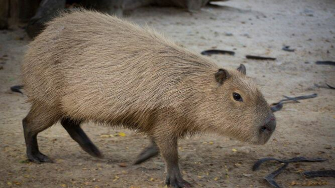
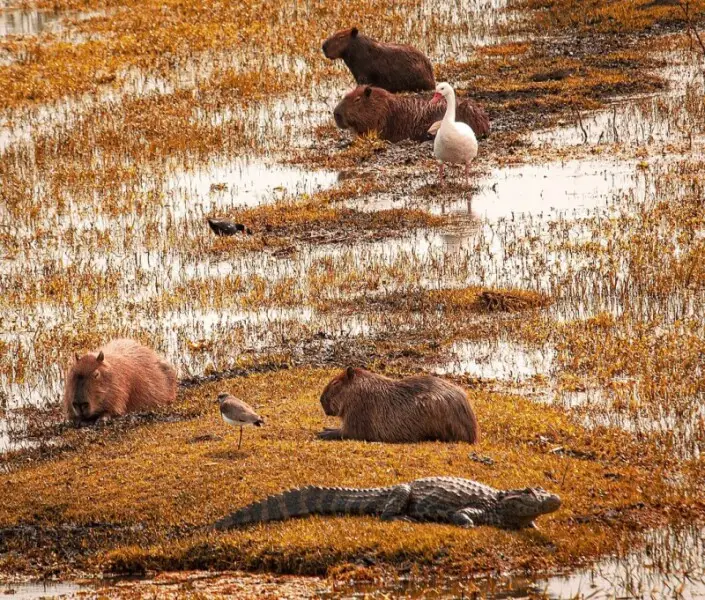
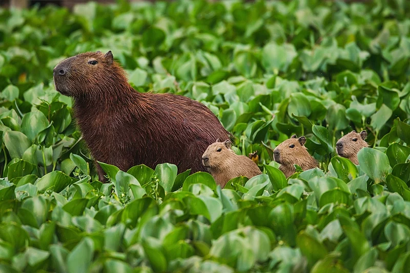

Capibaras


- Nombre: Capibara o Carpincho
- Nombre Cientifico: Hydrochoerus hydrochaeris
- Peso: 35 – 66 kg (Adulto)
- Altura: 50 – 62 cm (Adulto)
- Longitud: 1.1 – 1.3 m (Adulto)


El capibara o carpincho es una especie de roedor nativa de sudamerica. Es el roedor viviente de mayor tamaño y peso del mundo.
El capibara tiene un pelaje impermeable, esto es por sus densos y gruesos pelos
Los carpinchos son animales principalmente crepusculares. Pasan el calor del día en agujeros, en el barro o dentro de las aguas. Para dormir se esconden entre una vegetación espesa; no les hace falta ninguna cueva. En cambio, en las zonas donde son molestados por las actividades humanas, cambian y adoptan un estilo de vida nocturno.
Enlaces sobre la informacion extraida:
- Nombre: Capibara o Carpincho
- Nombre Cientifico: Hydrochoerus hydrochaeris
- Peso: 35 – 66 kg (Adulto)
- Altura: 50 – 62 cm (Adulto)
- Longitud: 1.1 – 1.3 m (Adulto)
El capibara o carpincho es una especie de roedor nativa de sudamerica. Es el roedor viviente de mayor tamaño y peso del mundo.
El capibara tiene un pelaje impermeable, esto es por sus densos y gruesos pelos
Los carpinchos son animales principalmente crepusculares. Pasan el calor del día en agujeros, en el barro o dentro de las aguas. Para dormir se esconden entre una vegetación espesa; no les hace falta ninguna cueva. En cambio, en las zonas donde son molestados por las actividades humanas, cambian y adoptan un estilo de vida nocturno.
National Geographic en español
}